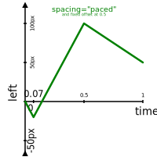

Status of This Document
This section describes the status of this document at the time of its publication. Other documents may supersede this document. A list of current W3C publications and the latest revision of this technical report can be found in the W3C technical reports index at http://www.w3.org/TR/.
This document was published by the CSS Working Group (part of the Style Activity) and SVG Working Group (part of the Graphics Activity) as a Working Draft. This document is intended to become a W3C Recommendation. If you wish to make comments regarding this document, please send them to public-fx@w3.org (subscribe, archives). All feedback is welcome.
Publication as a Working Draft does not imply endorsement by the W3C Membership. This is a draft document and may be updated, replaced or obsoleted by other documents at any time. It is inappropriate to cite this document as other than work in progress.
This document was produced by groups operating under the 5 February 2004 W3C Patent Policy. W3C maintains a public list of any patent disclosures made in connection with the deliverables of each group; that page also includes instructions for disclosing a patent. An individual who has actual knowledge of a patent which the individual believes contains Essential Claim(s) must disclose the information in accordance with section 6 of the W3C Patent Policy.
3. Timing model
This section describes and defines the behavior of the Web Animations
timing model.
3.2 Timing model concepts
In Web Animations, timing is based on a hierarchy of time relationships
between timing nodes.
Parent nodes provide timing information to their child nodes in the form
of time values.
A time value is a real number which nominally represents
a number of milliseconds from some moment.
The connection between time values and wall-clock milliseconds
may be obscured by any number of transformations applied to the value as
it passes through the time hierarchy.
In the future we may have timelines that are based on UI gestures in
which case the connection between time values and milliseconds will be
weakened even further.
Periodically, the user agent will trigger an update to the timing model
in a process called sampling.
On each sample the time values of each timing node are
updated.
A more precise definition of when the model is updated when scripting is
involved is provided in section 5.23 Script execution and live updates to the model.
3.3 The global clock
At the root of the Web Animations timing hierarchy is the global
clock.
The global clock is a source of monotonically increasing
time values unaffected by adjustments to the system clock.
The time values produced by the global clock represent
wall-clock milliseconds from an unspecified historical moment.
Because the zero time of the global clock is not specified,
the absolute values of the time values produced by the global
clock are not significant, only their rate of change.
Note that the global clock is not exposed in the programming interface and nor is it
expected to be exposed by markup.
As a result the moment from which global clock time values
are measured, that is, the zero time of the clock, is
implementation-dependent.
One user agent may measure the number of milliseconds since the the user
agent was loaded whilst another may use the time when the device was
started.
Both approaches are acceptable and produce no observable difference
in the output of the model.
3.4 Timelines
A timeline provides a source of time values for the
purpose of synchronization.
Typically, a timeline is tied to the global clock such
that its absolute time is calculated as a fixed offset from the time of
the global clock.
This offset is established by designating some moment as the timeline's
zero time and recording the time value of the
global clock at that moment.
At subsequent moments, the time value of the timeline is
calculated as the difference between the current time value of
the global clock and the value recorded at the zero time.
Note that we anticipate that other types of timelines may be introduced
in the future that are not tied to the global clock.
For example, a timeline whose time values are related to the progress of
a UI gesture.
Since a timeline may be defined relative to a moment that has yet
to occur, it may not always be able to return a meaningful time
value.
A timeline is considered to be not started when it is
in such a state that it cannot produce a time value.
Should this be renamed to something like “inactive” so we
can accommodate possible future timelines that may, after starting,
become unable to return a meaningful time value?
3.5 Players
A player connects a single animation node, called
its source content, to a timeline and provides
playback control.
A player's start time is the
time value of its timeline when its source content
is scheduled to begin playback.
When a player is created, it is assigned a globally unique
sequence number called the player sequence number.
This number is used to resolve the sort order of players for a variety
of situations such as combining animations, queuing events, and
returning the list of current players.
3.5.2 Seeking, pausing and limiting
Seeking, pausing and limiting a player are closely related and are
described here together.
3.5.4 Player events
As players play they report changes to
their status through player events.
Player events are a property of the Web Animations timing
model.
As a result they are dispatched even when the source content of
the player is absent or has no observable result.
3.5.4.1 Types of player events
- finish
-
Queued whenever a sample occurs that causes a player's
finished flag to be newly true.
- Bubbles: no
- Cancelable: no
- Context Info: currentTime, documentTime
To assist dispatching finish
events, players maintain a finished flag that
is initially false when the player is created.
During each sample, the finished flag is updated such
that it is set to true if the player is limited and false
otherwise.
3.6 Animation nodes
An animation node is an abstract term referring to an item in
the timing hierarchy.
3.6.1 Relationship between animation nodes and players
The source content of a player, if set, is a type of
animation node.
The source content of a player is said to be directly associated
with that player.
Animation nodes can be combined together into a hierarchy using
animation groups (see section 3.13 Grouping and synchronization).
Only the root animation node of such a hierarchy can be
directly associated with a player.
If an animation node that has a parent animation group
is designated as the source content of a player, the
animation node is removed from its parent animation
group before being associated with the player.
An animation node is associated with a player if it
is directly associated with a player or if it has an
ancestor animation group that is directly associated
with a player.
At a given moment, an animation node can be associated with at most one
player.
An animation node, node, is associated with
a timeline, timeline, if node is
associated with a player which, in turn, is associated with
timeline.
3.6.2 Types of animation nodes
This specification defines two types of animation nodes:
All types of animation nodes define a number of common
properties which are described in the following sections.
3.6.3 The active interval
Animation nodes define an active interval which is
the period of time during which the node is scheduled to produce its
effect with the exception of fill modes which apply outside the
active interval.
The lower bound of the active interval is defined by the
combination of the animation node's start time and start
delay.
An animation node's start time is the moment at
which the parent animation group,
if any, has scheduled the animation node to begin.
It is expressed in inherited time.
In most cases, including the case when the animation node has
no parent animation group,
the start time is zero.
The singular exception is sequence animation groups which set
the start times of their
children as described in section 3.13.4.1 The start time of children of an animation sequence.
In addition to the start
time, an animation node also has a start delay
which is an offset from the start time.
Unlike the start time which
is determined by the parent animation group, the start
delay is a property of the animation node itself.
The lower bound of the active interval of an animation
node, expressed in inherited time
space, is the sum of the start time and the start
delay.
These definitions are incorporated in the calculation of the local
time (see section 3.6.4 Local time and inherited time) and active time.
The length of the active interval is called the active
duration, the calculation of which is defined in section 3.10.2 Calculating the active duration.
Similar to the start delay, an animation node also has
an end delay which may be used to delay the start time of the next
sibling in a sequence animation group.
3.10 Core animation node calculations
3.11 Direction control
Animation nodes may also be configured to run iterations in
alternative directions using direction control.
For this purpose, animation nodes have a playback
direction parameter which takes one of the following values:
- normal,
- reverse,
- alternate, or
- alternate-reverse.
The semantics of these values are incorporated into the calculation of
the directed time which follows.
3.11.1 Calculating the directed time
The directed time is calculated from the iteration
time using the following steps:
- If the iteration time is
null, return
null.
-
Calculate the current direction using the first
matching condition from the following list:
-
If playback direction is
normal,
- Let the current direction be forwards.
-
If playback direction is
reverse,
- Let the current direction be reverse.
-
Otherwise,
-
-
Let d be the current iteration.
-
If playback direction is
alternate-reverse increment
d by 1.
-
There used to be a step here which seemed to be adding
special handling for filling when the node ends on
a repeat boundary but it seems like that is taken care
of by the calcuation of iteration time and
current iteration.
Is anything actually needed here?
-
If
d % 2 == 0, let the
current direction be forwards, otherwise let
the current direction be reverse.
-
If the current direction is forwards then return
the iteration time.
Otherwise, return the iteration duration
- iteration time.
4. Animation model
4.1 Animation effects
An animation effect takes a time fraction and
a current iteration value and uses them to calculate an
intermediate animation value for its target properties. Each animation
may have at most one animation effect associated with it.
Since the result of an animation effect is based on the
time fraction and current iteration value, it is updated
whenever the timing model is sampled.
4.1.1 Target properties
Each animation effect can have zero or more associated
target properties.
Target properties may be CSS properties
or DOM attributes.
If a given animation target has an attribute with the same name
as a CSS property, any target property of that name is taken to
refer to to the CSS property.
If there ever exists a situation where we need to animate an attribute
with the same name as a property (other than a presentation
attribute [SVG2]) then we will need to introduce
a disambiguation strategy. Generally, however, such naming should be
avoided.
4.1.2 Procedures for animating properties
In order to animate a target property, the following procedures
must be defined.
- interpolation —
given two target property values Vstart and
Vend, produces an intermediate value
Vres at a distance of p along the
interval between Vstart and
Vend such that
p = 0 produces Vstart and
p = 1 produces Vend.
The range of p is (−∞, ∞) due to the
effect of timing functions.
As a result, this procedure must also define extrapolation
behavior for p outside [0, 1].
- addition — given two
target property values
Va and Vb, returns the
sum of the two properties, Vresult.
For addition that is not commutative (for example, matrix
multiplication) Va represents the first term
of the operation and Vb represents the
second.
- accumulation —
given two target property values
Va and Vb, returns the
result, Vresult, of combining
the two operands such that Vb is treated as
a delta from Va.
For accumulation that is not commutative (for example,
accumulation of mismatched transform lists)
Va represents the first term of the
operation and Vb represents the second.
- distance computation — given two target property
values Vstart and
Vend, calculates some notion of scalar
distance between the values, distance.
4.1.3 Specific animation behaviors
The specific procedures used for animating a given target
property are referred to as the property's animation
behavior.
The animation behavior of CSS properties is defined by the
"Animatable:" line in the summary of the property's definition or in
[CSS3-TRANSITIONS] for properties that lack a such a line.
The default animation behavior for CSS properties is "as
string". Should this be defined here or in CSS Animations Level 4?
For DOM attributes, the animation behavior is defined alongside
the attribute definition.
Unlike CSS properties, if such a definition is not provided the
default animation behavior is “not
animatable”.
Following is a series of pre-defined animation behaviors.
[CSS3-TRANSITIONS] provides further CSS-specific animation
behaviors.
For animation behaviors that do not define a specific procedure
for addition or which are defined as
not additive, the addition procedure is simply
Vres = Vb.
For animation behaviors that do not define a specific procedure
for accumulation, the accumulation procedure is identical
to the addition procedure for that
behavior.
For animation behaviors that do not define a specific procedure
for distance computation or which are defined as not
paceable, the distance computation procedure is simply
distance = 1.
4.1.3.5 Animatable as color
A target property that is animatable as color has
the following animation behavior:
- interpolation:
as defined in [CSS3-TRANSITIONS].
- addition:
as with animatable as real number but performed on each
RGBA color component in premultiplied space.
Since negative color is not currently supported, clamping of
the channel values may be performed upon each addition or once
when composition is complete.
- distance computation:
sqrt((Rend
- Rstart)^2 + (Gend
- Gstart)^2 + (Bend
- Bstart)^2 + (Aend
- Astart)^2)
where <R|G|B|Astart|end>
represents the red, green, blue, or alpha channel of
Vstart or Vend
respectively.
Each value is normalized to the [0.0, 1.0] range and expressed
in premultiplied color space.
Should we call this “animatable as premultiplied RGBA additive
color in sRGB color space” instead?
4.1.3.7 Other animation behaviors
The set of animation behaviors defined here may be extended
by other specifications.
For example, properties with using the <image> type are
animated using the interpolation behavior defined in CSS Image
Values and Replaced Content
[CSS4-IMAGES].
There are a bunch of CSS properties for which distance (and in
some cases addition) is not defined or which need special
handling.
For example,
- font-stretch (an enum but handled like an integer)
- visibility (0 or 1 depending on if endpoints match or not)
- flex-grow and flex-shrink which allow animation only if one of
the endpoints is 0)
- value pairs, triples (use square distance)
- rects (use square distance)
- dash arrays (square distance but a bit weird due to
percentages)
- shadows (square distance of components)
- filters (undefined)
- background-position (special list handling needed)
- pair lists
Should we define these here or in the CSS Animation 4 spec?
4.2 Combining animations
4.2.1 The animation stack
Associated with each property targetted
by one or more animation effects is an animation
stack that establishes the relative priority of the animation
effects.
The relative priority of any two animation
effects, A and B, within an animation
stack is established by comparing the properties of the
animations applying A and B as follows:
- Let the associated player of an animation effect
be the player associated with the
animation that is applying the animation effect to
the property with which this animation stack is
associated.
- Sort A and B by applying the following
conditions in turn until the order is resolved,
- Sort A and B using any custom
player priority specified for the associated
player of each of A and
B so that lower priorities sort first.
- Sort by the player sequence number so that lower
sequence numbers sort first.
- Sort A and B in tree order.
(By this point, A and B must have the
same player since otherwise the order would have been
resolved in the previous step.)
Animation effects that sort earlier have lower
priority.
4.2.1.1 The custom player priority
Each player has an associated numeric custom player
priority that is used to provide high-level control of
animation priority for specifications layered on top of Web
Animations.
The initial value of the custom player priority is zero.
Note that the custom player priority is primarily
intended to be used to prioritize animations at
a high-level, such as to prioritize animations by type.
For example, it can be used to ensure that CSS Animations always
override CSS Transitions.
It is possible to control animation priority at a lower-level by
setting the player start time appropriately,
(possibly after making compensatory adjustments to the start
delay of the source content) or influencing the
player sequence number by controlling when players
are created.
4.2.4 Applying the composited result
The process for a applying a composited value depends on if the
target property refers to a CSS property or a DOM attribute.
4.3 Keyframe animation effects
A keyframe animation effect is an animation effect
that produces intermediate animation values for its target
properties by interpolating between a series of property values
positioned at fractional offsets.
Each set of property values indexed by an offset is called
a keyframe.
The offset of a keyframe is a value
in the range [0, 1] or the special value null.
The list of keyframes for a keyframe animation effect is
loosely sorted by offset which means that for each
keyframe in the list that has a keyframe offset that is
not null, the offset is greater than or equal to the offset of the
previous keyframe in the list with a keyframe offset that
is not null, if any.
The behavior when keyframes overlap or have unsupported values
is defined in section 4.3.2 The intermediate animation value of a keyframe animation effect.
Each keyframe also has a timing function associated with it
that is applied to the period of time between the keyframe on which it
is specified and the next keyframe in the list.
The timing function specified on the last keyframe in the
list is never applied.
In addition to the composite operation specified on the
animation effect, each keyframe may also have an
associated composite operation that is applied to all values
specified in that keyframe.
If no composite operation is specified for a keyframe,
the composite operation specified for the animation
effect is used.
4.3.1 Spacing keyframes
This section is non-normative.
It is often useful to be able to provide a series of property values
without having calculate the keyframe offset of each value in
time but instead to rely on some automatic spacing.
For example, rather than typing:
elem.animate([ { color: 'blue', offset: 0 },
{ color: 'green', offset: 1/3 },
{ color: 'red', offset: 2/3 },
{ color: 'yellow', offset: 1 } ], 2000);
It should be possible to type the following and allow the user agent
to calculate the offset of each
keyframe:
elem.animate([ { color: 'blue' },
{ color: 'green' },
{ color: 'red' },
{ color: 'yellow' } ], 2000);
Web Animations provides spacing modes for this purpose. The default
spacing mode for keyframe animation effects is
“distribute” which
produces the result described above.
The other spacing mode, “paced”, is useful when
it is desirable to maintain an even rate of change such as for motion path animation.
For example, consider the following animation:
elem.animate([ { left: '0px' },
{ left: '-20px' },
{ left: '100px' },
{ left: '50px' } ], 1000);
The resulting value of the left
property is illustrated below:
The animated value of the left property over time when applying the
distribute spacing
mode.
The values are evenly spaced in time but the rate of change differs
for each segment as indicated the varying slope of the graph.
We can use the paced
spacing mode as follows:
elem.animate(
new KeyframeEffect([ { left: '0px' },
{ left: '-20px' },
{ left: '100px' },
{ left: '50px' } ], { spacing: "paced" }), 1000);
The result is illustrated below:
The animated value of the left property over time when applying the
paced spacing mode.
The absolute value of the slope is graph is equal for all segments
of the animation indicating a constant rate of change.
It is also possible to combine fixed keyframe offsets with
spacing modes as follows:
elem.animate(
new KeyframeEffect([ { left: '0px' },
{ left: '-20px' },
{ left: '100px', offset: 0.5 },
{ left: '50px' } ], { spacing: "paced" }), 1000);
The result is illustrated below:

The animated value of the left property over time when applying the
paced spacing mode and
a fixed keyframe offset that
puts the 100px value at 0.5.
The slope of the graph is equal for the first two segments but
changes for the last segment in order to accommodate the fixed
offset.
Before calculating animation values from a keyframe animation
effect, an absolute value must be computed for the keyframe
offset of each keyframe with a null offset.
The values computed depend on the keyframe spacing mode
specified for the keyframe animation effect.
The keyframe spacing modes are:
- distribute
-
Indicates that keyframes with a null keyframe offset
null are positioned so that the difference between subsequent
keyframe offsets are equal.
- paced
-
Indicates that keyframes with a null keyframe offset
null are positioned so that the distance between subsequent
values of a specified paced property are equal.
The distance is calculated using the distance computation
procedure defined by the animation behavior associated
with the paced property.
4.3.1.1 Applying spacing to keyframes
We define a generic procedure for evenly distributing
a keyframe, keyframe, between two reference
keyframes, start and end, whose keyframe
offsets are not null, as follows:
- Let offsetk be the keyframe
offset of a keyframe k.
- Let n be the number of keyframes between and
including start and end minus 1.
- Let index refer to the position of
keyframe in the sequence of keyframes between
start and end such that the first keyframe
after start has an index of 1.
- Set the keyframe offset of keyframe to
offsetstart +
(offsetend −
offsetstart)
× index / n.
The computed keyframe offset values of each keyframe
with a null keyframe offset are determined using the following
procedure.
- Let keyframes refer to the list of keyframes
associated with the keyframe animation effect.
- If keyframes contains more than one
keyframe and the keyframe offset of
the first keyframe in keyframes is null,
set the keyframe offset of
the first keyframe to 0.
- If the keyframe offset of the last keyframe in
distributed keyframes is null, set its
keyframe offset to 1.
- For each pair of keyframes A and B
where:
calculate the keyframe offset of
each keyframe between A and B
depending on the keyframe spacing mode as follows:
- If the spacing mode
is paced,
-
- Define a keyframe as paceable if it
contains a value for the paced property.
- Let paced A be the first keyframe in the
range [A, B] that is
paceable, if any.
- Let paced B be the last keyframe in the
range [A, B] that is
paceable, if any.
- If there is no paced A or paced
B let both refer to B.
Note that in this case, the spacing
behavior degenerates to distribute
spacing.
- For each keyframe in the range
(A, paced A] and
[paced B, B),
apply the procedure for evenly distributing
a keyframe using A and B as
the start and end keyframes
respectively.
Yes, this is correct.
We want, index and n in that
procedure to reflect all the keyframes
between A and B, not just the
keyframes between, for example, A and
spaced A.
- For each keyframe in the range
(paced A, paced B) that is
paceable:
- Let
distk
represent the cumulative distance to a keyframe
k from paced A
as calculated by applying the distance
computation defined by the animation
behavior of the paced property to the
values of the paced property on each pair of
successive paceable keyframes in the range
[paced A, k].
- Set the offset of k to
offsetpaced
A
+
(offsetpaced
B
−
offsetpaced
A)
×
distk
/
distpaced
B
- For each keyframe in the range (paced A,
paced B) that still has
a null keyframe offset (because it is not
paceable), apply the procedure
for evenly distributing a keyframe using
the nearest keyframe before and after the
keyframe in question in keyframes that has
a keyframe offset that is not null, as the
start and end keyframes
respectively.
- Otherwise,
-
Apply the procedure for evenly distributing
a keyframe to each keyframe in the range (A,
B) using A and B as the
start and end keyframes respectively.
Note that although the above procedure defines computing keyframe
offsets in terms of overwriting null values, user agents that
implement the programming
interface are required to maintain the original null values as
well as calculating the computed offsets.
This is because the getFrames method of the
KeyframeEffect interface returns keyframe offsets both
before and after applying spacing.
The above algorithm is quite complex.
It attempts to cover all possible combinations of input where
keyframe offsets and or paced property values may be missing.
Furthermore, it attempts to do this in a way that degenerates
consistently and also allows the author to combine fixed offsets
with either pacing or distribute spacing.
We await implementation experience to determine if the complexity
is justified.
4.4 Motion path animation effects
A motion path animation effect is an animation effect
that produces animation values for the transform target
property of an animation target such that it follows
a geometric curve commonly referred to as a “motion path”.
The motion path of a motion path animation effect is
defined by an SVG Path, as specified by SVG [SVG2].
A motion path consists of a list of path commands (see path data
[SVG2]).
Amongst the different types of path commands, we define
orientation path commands as
moveto
commands and bearing
commands.
All types of path commands that are not orientation
path commands are referred to as drawing path commands.
The automatic rotation flag of a motion path animation
effect, if set, specifies that the intermediate animation
value generated by the motion path animation effect produces
a rotation that matches the directional tangent vector of the
motion path.
The rotation angle parameter of a motion path animation
effect specifies a constant rotation that applies to the target
transform in addition to any rotation generated by setting the
automatic rotation flag.
4.4.1 Distance along a path
The procedure used for calculating the length of a path or
a subsection is provided by the definition of distance
along a path in SVG [SVG2].
4.4.2 Spacing motion paths
The following properties control the rate of progress of a motion
path animation effect:
- spacing mode
-
Specifies the strategy used for determining the offset of each
spacing point or path command when not specified by
a point offset.
The possible spacing modes are identical to those defined for
keyframe animation effects (see section 4.3.1 Spacing keyframes).
Note that a spacing mode of distribute has no
effect if point offsets are specified.
This is because spacing between point offsets
always uses paced
spacing mode.
- spacing points
-
An optional sequence of real numbers in the range [0.0, 1.0] that
correspond to fractions of the total path length.
The animation effect produces animation values such that the
animation target moves backwards and forwards along the
motion path following the sequence indicated by these
points.
Furthermore, the point on the motion path indicated by each
such number forms a handle that may be associated with a point
offset or positioned by the spacing mode.
- point offsets
-
An optional ordered sequence of real numbers in the range [0.0,
1.0] that specifies the time fraction when the
corresponding spacing point, or, if spacing points
are not provided, drawing path command, should be visited.
If specified, the first value in the sequence must be 0.0 and the
last value must be 1.0.
There must be as many items in the sequence of point
offsets as in the sequence of spacing points, if
provided.
If a sequence of spacing points is not provided,
the number of items in point offsets must equal the number
of drawing path commands in the motion path plus
one.
- point easing
-
An optional ordered sequence of timing functions that
specify the easing behavior between each pair of spacing
points, or, if spacing points are not provided, between
each pair of drawing path commands.
If specified, there must be as many items as in
the sequence of spacing points minus one, if provided.
If a sequence of spacing points is not provided,
the number of items in point easing must equal the number
of drawing path commands in the motion path.
Note that the above descriptions of the length of each list
represent the requirements of the model.
Users of the model such as markup or programming interfaces
may fulfil these requirements, for example, by defining padding
behavior or error handling.
Need a diagram here showing how the different combinations work.
4.4.2.1 Applying spacing to motion paths
The end result of applying spacing is:
The sequence of effective spacing points is determined by
following the steps associated with the first matching condition
from below:
- If there are no drawing path commands,
-
Let effective spacing points be an empty sequence.
- If spacing points is specified,
-
Let effective spacing points refer to spacing
points.
- Otherwise,
-
Perform the following steps:
- Let effective spacing points be a sequence
consisting of the single element 0.
- For each drawing path command in path
commands, append to effective spacing points
a number equal to the distance along a path up to
the point at the end of the given path command,
divided by the total path length.
Having determined the effective spacing points, the sequence
of effective point offsets is determined by following the
steps associated with the first matching condition from below:
- If there are no drawing path commands,
- Let effective point offsets be an empty sequence.
- If point offsets is specified,
- Let effective point offsets refer to point
offsets.
- If the spacing mode
is distribute,
-
Perform the following steps:
- Let effective point offsets be a sequence of
equal length to effective spacing points.
- Let n be the number of elements in
effective point offsets minus one.
- Let k represent an index in the range [0,
n].
- Set the value of each point in effective point
offsets so that the point at index k
is equal to k / n.
- Otherwise,
-
Perform the following steps:
- Let effective point offsets be a sequence of
equal length to effective spacing points.
- Let n be the number of elements in
effective point offsets minus one.
- Let k represent an index in the range [0,
n].
- Let point(k)
represent the value of effective spacing points
at index k.
- Set the value of each point in effective point
offsets so that the value at index k is
defined by the following formula:
- For k = 0, offset = 0
- For k = 1..n,
offset =
[ \sum_{i=1}^k | point(i)-point(i-1) | ]
/
[ \sum_{i=1}^n | point(i)-point(i-1) | ]
The effective point easing is simply the specified
point easing.
If point easing is not set, the effective point easing
is a sequence of linear timing functions equal in length to
the number of drawing path commands in the motion
path.
4.4.3 Determining the path fraction
The path fraction for a given time fraction,
progress, is determined using the following procedure:
- If effective point offsets is empty, let path
fraction equal time fraction and abort these steps.
- If effective point offsets has only one item, let path
fraction equal the value of the one item in effective
spacing points and abort these steps.
- If progress ≥ 1, let the path fraction equal
the value of the last item in effective point
offsets and abort these steps.
- If progress < 0, let the path fraction equal
the value of the first item in effective point
offsets and abort these steps.
- Let start index and end index represent
the zero-based indices of the last pair of successive
values in effective point offsets such that start
offset ≤ progress ≤ end offset.
- Let interval fraction be the ratio of the difference
between progress and the offset at start
index, and the difference between the offset at end
index and the offset at start index.
- Let scaled interval fraction be the result of applying
the timing function from effective point easing
at index start index with interval fraction
as the input.
- Let segment start and segment end be the
values in effective spacing points at the indicies
start index and end index respectively.
- Let the path fraction be the result of evaluating the
following formula:
scaled interval fraction *
(segment end - segment start) +
segment start.
4.5 Custom effects
A custom effect is an author-defined programming callback
that is passed timing information when sampling is performed.
4.5.1 Sampling custom effects
Custom effects are called for each referencing animation
when a sample is performed based on the following criteria.
- If, on the previous sample, the animation referencing the
custom effect:
Call the callback passing a null time fraction and the
animation target from the previous sample as parameters to
the callback.
- Call the callback for the current animation target based on
the first matching condition from the following:
- If the animation referencing the custom effect is not
in effect but was in effect in the previous
sample,
-
Call the callback passing a null time fraction and the
current animation target as parameters to the callback.
- Otherwise, if the animation referencing the custom
effect:
-
Call the callback passing with the referencing
animation's current time fraction and animation
target as parameters to the callback.
There may be use cases where an action needs to be triggered at
a specific point in an animation tree.
In many cases this can be achieved by inserting a custom effect with
a step-start easing that spans the period during which the action
should be triggered.
However, this can impose additional layout requirements on the
content which might be cumbersome to accomodate.
Some alternatives under consideration:
- Additional calling conditions could be defined to accommodate
zero-width custom effects. For example, it could be required
that the callback be called if (given infinite precision) there
was a time between the previous and current sample times that
aligned with the custom effect.
- Instead of adding special calling conditions to custom effects,
a new type of animation node, Trigger, could be introduced. The
trigger would only ever act as a zero-width custom effect as
described above, its constructor would take a callback function,
but not require a target or timing. It could also specify other
calling conventions, for example whether it should only trigger
in a specific playback direction.
5. Programming interface
5.2 The AnimationPlayer interface
Players are represented in the Web Animations
API by the AnimationPlayer interface.
interface AnimationPlayer : EventTarget {
attribute AnimationNode? source;
readonly attribute AnimationTimeline timeline;
attribute double startTime;
attribute double currentTime;
attribute double playbackRate;
readonly attribute boolean paused;
readonly attribute boolean finished;
void cancel ();
void finish ();
void play ();
void pause ();
void reverse ();
attribute EventHandler onfinish;
};
5.2.1 Attributes
source of type AnimationNode, nullable-
The source content associated with this player.
A player can only be associated with at most one
animation node, and likewise, an animation node can
only be associated with at
most one player.
In order to maintain these invariants, on setting this value, the
following procedure is performed:
- Let old value be the current value of the
source attribute.
- Let new value be the value to set.
- If new value is the same object as old
value, return.
- If old value is not
null,
disassociate old value from this player.
- If new value is not
null,
perform the steps associated with the first matching condition
of the following:
- If new value has no parent group and is
associated with a player,
- disassociate new value from its player.
- If new value has a parent group,
- remove new value from its parent group by
calling
new value.remove().
- Otherwise,
- do nothing.
- Associate new value with this player.
- Set the
source attribute to new
value.
timeline of type AnimationTimeline, readonly-
The timeline associated with this player.
startTime of type double-
Returns the start time of this
player.
Setting this attribute updates the player start time using
the procedure defined in section 3.5.2.6 Updating the player start time.
currentTime of type double-
The effective current time of this player.
Setting this attribute follows the procedure defined in section 3.5.2.9 Performing a seek.
playbackRate of type double-
The playback rate of this
player.
Setting this attribute follows the procedure defined in section 3.5.3.1 Updating the playback rate.
paused of type boolean, readonly-
The paused state of this player.
finished of type boolean, readonly-
Returns true if this player has reached or passed the end of
its source content in its current playback direction.
This corresponds to when the player is limited.
onfinish of type EventHandler-
The event handler for the finish event.
Note that the EventHandler
callback interface type is defined in [HTML5].
5.2.2 Methods
cancel-
Set
source to null and clears all effects associated
with the previous source content.
We need to make sure, for example, that any custom effects get
called with a null sample time so they can remove their effects.
This applies to manually setting source to null as
well so we should define this behavior there.
No parameters.
finish-
Seeks the player to the end of the source content in the
current direction as follows:
- If player playback rate < zero,
-
Seek the player so its
current time is zero.
- If player playback rate equals zero,
-
Do nothing.
- If player playback rate > zero,
-
Seek the player so its
current time is equal to the end time of the
source content or zero if there is no source
content associated with this player..
Exceptions:
- DOMException of type
InvalidStateError
-
Raised if the end time of this player's source
content is infinity and the player playback rate is
> zero.
No parameters.
play-
Unpauses the player and rewinds if it has finished playing using
the following procedure:
- Set the paused state of the player to false using the
procedure defined in section 3.5.2.8 Updating the paused state.
- If source content is associated with the player,
adjust the current time of
the player as follows:
- If player playback rate > 0; and
either current time < zero or
current time ≥ source
content's end time,
- Seek to time zero.
- If player playback rate < 0; and
either current time ≤ zero or
current time > source
content's end time,
- Seek to the source content's end
time.
- Otherwise,
- Do nothing.
- Set the player's finished flag to false.
No parameters.
pause-
Set the paused state of this player to true using the
procedure defined in section 3.5.2.8 Updating the paused state.
No parameters.
reverse-
Inverts the playback rate of
this player and seeks to the start of the source media if it has
finished playing in the reversed direction using the following
procedure.
- If the player playback rate is zero, abort these steps.
- If source content is associated with the player,
adjust the current time of
the player as follows:
- If player playback rate > zero and
effective current time > source
content's end time,
- Seek to the source content's end time.
- If player playback rate < zero and
effective current time < zero,
- Seek to time zero.
- Otherwise,
- Do nothing.
- Set the player playback rate to
-player
playback rate following the steps in section 3.5.3.1 Updating the playback rate.
- Set the paused state of the player to false.
Is this unpausing behavior correct?
Note that unlike play(), the player's finished
flag is not explicitly reset here since that behavior is
performed by the procedure for updating the player playback
rate defined in section 3.5.3.1 Updating the playback rate.
No parameters.
5.3 The AnimationNode interface
Animation nodes are represented in the Web
Animations API by the AnimationNode interface.
interface AnimationNode {
readonly attribute double? localTime;
readonly attribute unsigned long? currentIteration;
readonly attribute AnimationTiming timing;
readonly attribute double startTime;
readonly attribute unrestricted double duration;
readonly attribute unrestricted double activeDuration;
readonly attribute unrestricted double endTime;
readonly attribute AnimationGroup? parent;
readonly attribute AnimationNode? previousSibling;
readonly attribute AnimationNode? nextSibling;
void before (AnimationNode... nodes);
void after (AnimationNode... nodes);
void replace (AnimationNode... nodes);
void remove ();
readonly attribute AnimationPlayer? player;
};
5.3.1 Attributes
localTime of type double, readonly, nullable-
The local time of this animation node.
localTime will be null if this
animation node is not associated with a player or if it has
a parent animation group that is not in effect.
currentIteration of type unsigned long, readonly, nullable-
The current iteration index beginning with zero for the first
iteration.
timing of type AnimationTiming, readonly-
Returns the input timing properties specified for this
animation node.
This is comparable to the specified style on an Element,
elem.style.
Should we make this writeable? Then you could do:
animA.timing = animB.timing;
Doing so would probably also involve defining
AnimationTiming.clone and a constructor for
AnimationTiming.
Representing these parameters has been a particularly
contentious topic.
The current arrangement:
- requires defining both an
AnimationTiming interface
and an AnimationTimingInput dictionary type which
increases the API surface area somewhat
- means that setting the value occurs at a different place
(
anim.timing.duration) to reading
the value (typically, anim.duration)
- opens up questions about whether
AnimationTiming
objects should be share-able or not
- uses a union of a string and a double to represent
a duration which opens up questions about whether strings
such as
"3s" should be allowed (and allowing
them makes walking the tree more complex).
However, it separates "specified" timing from "computed" timing
which some consider advantageous.
The only situation where calculated values and input values
differ is for duration.
One alternative that has been proposed is to introduce
a Duration interface as follows:
interface AnimationNode {
// AnimationTiming
attribute double delay;
attribute FillMode fill;
attribute Duration duration;
attribute double playbackRate;
// ...
// Scheduled time
readonly attribute double startTime;
readonly attribute unrestricted double endTime;
};
interface Duration {
double ms;
DOMString string;
}
Usage is as follows:
var specifiedDur = anim.duration.string;
var calculatedDur = anim.duration.ms;
anim.duration.ms = 3000;
anim.duration.string = "3s";
anim.duration.string = "auto";
Your feedback is most welcome at public-fx@w3.org, subject
[web-animations] ….
startTime of type double, readonly-
The start time of this animation node in
milliseconds.
This is the time at which the parent animation group, if
any, has scheduled this child to run within its transformed time space, that is, the
animation node's inherited time
space.
The start of the active interval is based on the sum of
the start time and
start delay.
duration of type unrestricted double, readonly-
The iteration duration of this animation node.
Unlike the duration attribute of
the AnimationTiming interface or
AnimationTimingInput dictionary,
this attribute returns the calculated value of the iteration
duration.
If timing.duration is the
string auto or any unsupported value, this attribute
will return the current calculated value of the intrinsic
iteration duration.
This value may be changed by setting the
duration attribute of the
timing member of this interface.
activeDuration of type unrestricted double, readonly-
The active duration of this animation node.
endTime of type unrestricted double, readonly-
The end time of the animation node expressed in
milliseconds in inherited time
space.
This corresponds to the end of the animation node's active
interval plus any end delay.
parent of type AnimationGroup, readonly, nullable-
The parent animation group of this animation node or
null if this animation node does not have
a parent animation group.
Should this be parentGroup?
previousSibling of type AnimationNode, readonly, nullable-
The previous sibling of this animation node.
nextSibling of type AnimationNode, readonly, nullable-
The next sibling of this animation node.
player of type AnimationPlayer, readonly, nullable-
The player with which this animation node is associated, if any.
This object can be used to perform play control such as pausing or
rewinding on this animation node and all other
animation nodes in the same hierarchy.
This will be null if this animation node is
not associated with a player.
Feedback has been provided that suggests this reference causes the
relationship between AnimationPlayers and AnimationNodes to be
circular, which confuses the model. The player attribute should be
considered at risk unless a strong use case for the
reference arises.
5.4 The AnimationTiming interface
Timing parameters for an AnimationNode are collected together
under the AnimationTiming type.
interface AnimationTiming {
attribute double delay;
attribute double endDelay;
attribute FillMode fill;
attribute double iterationStart;
attribute unrestricted double iterations;
attribute (unrestricted double or DOMString) duration;
attribute double playbackRate;
attribute PlaybackDirection direction;
attribute DOMString easing;
};
5.4.1 Attributes
delay of type double-
The start delay which represents the number of milliseconds
from an animation node's start
time to the start of the active interval.
Now that we have endDelay, should we change this back
to startDelay?
endDelay of type double-
The end delay which represents the number of milliseconds
from the end of an animation node's active interval
until the start time of any animation node that may
follow, for example, in an animation sequence.
fill of type FillMode-
The fill mode as specified by one of the FillMode
enumeration values.
When performing timing calculations the special value auto is expanded
to one of the fill modes recognized by the timing model as
follows,
-
If the animation node to which the fill mode is being is
applied is an animation,
-
Use none as the fill
mode.
- Otherwise,
-
Use both as the fill
mode.
iterationStart of type double-
The animation node's iteration start property.
A finite real number greater than or equal to zero representing
the number of iterations into the animation node at which to
begin.
For example, a value of 0.5 would cause the animation node to
begin half-way through the first iteration.
Values less than zero are clamped to zero for the purpose of
timing model calculations.
Note that the value of iterations is effectively
added to the iterationStart such that
an animation node with an iterationStart of
‘0.5’ and iterations of
‘2’ would still repeat twice however it would begin
and end half-way through the animation node's iteration
interval.
Setting the iterationStart to a value greater than
or equal to one is typically only useful in combination with an
animation effect that has an iteration composite
operation of ‘accumulate’.
iterations of type unrestricted double-
The animation node's iteration count property.
A real number greater than or equal to zero (including positive
infinity) representing the number of times to repeat the
animation node.
Values less than zero and NaN values are treated as
the value 1.0 for the purpose of timing model calculations.
duration of type (unrestricted double or DOMString)-
The iteration duration which is a real number greater than
or equal to zero (including positive infinity) representing the
time taken to complete a single iteration of the animation
node.
The string value auto is used to indicate that the
iteration duration reflects the animation node's
intrinsic iteration duration.
Real numbers less than zero, NaN values, and strings
other than the lowercase value auto are treated
the same as auto for the purpose of timing model
calculations.
Should we allow strings such as "3s" here?
i.e. a CSS <time>.
It might be useful for readability but introduces complexity when
handling this member (need to test the type, then possibly parse
the string).
It also introduces the issue of whether we should parse a full
clock
value.
playbackRate of type double-
The animation node's playback rate property.
This is a multiplier applied to the local time potentially
causing the node to run at a different rate to its natural speed.
direction of type PlaybackDirection-
The playback direction of the animation node as
specified by one of the PlaybackDirection enumeration
values.
easing of type DOMString-
The timing function used to scale the time to
produce easing effects.
The syntax of the string is defined by the following production:
Unrecognized string values or values that correspond to
a timing function that is not supported for the type of
animation node to which this property is applied
are treated as if the linear keyword was specified
for the purpose of timing model calculations.
In future we may extend this so that it is possible to query the
individual functions in the string.
It may be possible to do this by extending this attribute using
some stringifier magic, or else we could just add
easingList similar to HTML's classList.
5.7 The AnimationNodeList interface
A list of animation nodes may be represented by
an AnimationNodeList.
The AnimationNodeList interface supports indexed
properties with indices in the range 0 ≤ index <
length.
The only reason this interface exists is to provide a familiar
experience for authors familiar with DOM interfaces where child nodes
are accessed via a children member.
interface AnimationNodeList {
readonly attribute unsigned long length;
getter AnimationNode? item (unsigned long index);
};
5.7.2 Methods
item [index]-
Returns the animation node at index.
If index is greater than or equal to
length returns null.
5.9 The Animation interface
Animations are represented by the
Animation interface.
[Constructor (Animatable? target, object? effect,
optional (unrestricted double or AnimationTimingInput)
timing)]
interface Animation : AnimationNode {
attribute (AnimationEffect or EffectCallback)? effect;
attribute Animatable? target;
Animation clone ();
};
5.9.2 Attributes
effect of type (AnimationEffect or EffectCallback), nullable-
The animation effect or custom effect to apply.
May be null in which case the animation will produce
no observable effect.
On setting, if the previous value was an EffectCallback, we
should call the old callback with a null time fraction so it can
clear its result.
target of type Animatable, nullable-
The element or pseudo-element being animated by this object.
This may be null for animations that do not target
a specific element such as an animation that produces a sound
using an audio API.
5.9.3 Methods
clone-
Creates a copy of this Animation object using the following procedure.
- Let source be the
Animation object to
clone, that is, this object.
- Let cloned timing be a new
AnimationTimingInput object whose members are assigned
the value of the attribute with the same name on
source.timing.
-
The
AnimationEffect is cloned depending on the type of
source.effect as follows,
- If
source.effect is an
Animation object,
-
Let cloned effect be the result of calling
source.effect.clone().
- If
source.effect is an
EffectCallback object,
-
Let cloned effect be
source.effect.
- Otherwise,
-
Let cloned effect be
null.
- Return a new Animation object created by
calling the Animation
constructor with parameters
Animation(source.target, cloned
effect, cloned timing).
No parameters.
5.9.4 Processing the effect parameter
The effect parameter, an ECMAScript value passed to the
Animation constructor or to the
animate operation of the Animatable interface,
may specify an EffectCallback, an AnimationEffect,
a Keyframe a sequence of Keyframes, or null.
However, since callback functions and dictionaries are not
distinguishable in WebIDL, we define the processing of this
parameter for ECMAScript here in prose.
The procedure for converting an effect to an IDL value
with parameter effect is as follows:
- If effect is null,
- Return null.
- If effect is a platform
object that implements
AnimationEffect,
-
return the IDL value that is a reference to the that platform
object.
- If IsCallable(effect) is true,
- Return the result of applying the procedure
for converting an ECMAScript value to an IDL callback function
type to effect using
EffectCallback as the
callback function type.
- Otherwise,
- Return a new
KeyframeEffect object constructed passing
effect as the frames parameter.
Note that since the processing of this parameter is defined in
prose, the above steps will take place after any coercion is applied
to other parameters passed to the same operation.
5.10 The Animatable interface
Objects that may be the target of an Animation implement the
Animatable interface.
[NoInterfaceObject]
interface Animatable {
AnimationPlayer animate (object? effect,
optional (double or AnimationTimingInput) timing);
sequence<Animation> getCurrentAnimations ();
sequence<AnimationPlayer> getAnimationPlayers ();
};
5.10.1 Methods
animate-
Creates a new Animation object
whose animation target is the object on which the method is
called, and calls
the play
method of the AnimationTimeline object of
the document timeline of the node
document [DOM4] of the element passing the newly created
Animation as the argument to
the method.
The following code fragment:
var anim = elem.animate({ opacity: 0 }, 2000);
is equivalent to:
var anim = new Animation(elem, { opacity: 0 }, 2000);
elem.ownerDocument.timeline.play(anim);
Returns the AnimationPlayer object returned by the
play method of the AnimationTimeline.
| Parameter | Type | Nullable | Optional | Description |
|---|
| effect | object | ✔ | ✘ |
The effect to apply.
This value is passed to the Animation
constructor as the effect parameter and has the
same interpretation as defined for that constructor.
|
| timing | (double or AnimationTimingInput) | ✘ | ✔ |
The timing parameters of the animation.
This value is passed to the Animation
constructor as the timing parameter and has the
same interpretation as defined for that constructor.
|
getCurrentAnimations-
Returns the set of current Animation objects that have an animation
effect whose animation target is this object.
The returned list of Animation
objects is sorted by their associated animation effect
using the procedure defined for sorting animation effects
in section 4.2.1 The animation stack.
Note that when called on Element objects, the list of
returned Animations will
not include those animations whose target is
a PseudoElement associated with the
Element since PseudoElement and
Element are treated as independent Animatable
objects.
Feedback has been provided that suggests direct references from
AnimationNode objects to AnimationPlayers generate circular
reference and confuse the model. Without this reference,
getCurrentAnimations is not very useful, as the returned
AnimationNodes can't be used to effect play control. In the
absence of a strong use case for a reference from AnimationNode
to AnimationPlayer, this feature should be considered at
risk.
No parameters.
getAnimationPlayers-
Returns the set of AnimationPlayer objects
whose source content is current and contains at
least one animation whose animation target is this
object.
If this object is the animation target of two or more animations which are associated with the
same player, the corresponding AnimationPlayer
object will still only appear in the returned list once.
The returned list is sorted in increasing order by player
sequence number.
No parameters.
5.11 The AnimationEffect interface
Animation effects are represented by
the AnimationEffect interface.
AnimationEffect is an abstract interface of which several
concrete subinterfaces are provided.
interface AnimationEffect {
attribute IterationCompositeOperation iterationComposite;
attribute CompositeOperation composite;
AnimationEffect clone ();
};
5.11.2 Methods
clone-
Creates and returns a new object of the same type as this object's
most-derived interface such that it will produce the same output
as this object.
We either need a more rigorous definition here or (probably
better) a sets of steps on a per-subclass basis.
No parameters.
In future, we may expose any sample (double? timeFraction,
double currentIteration, Animatable? target, any
underlyingValue) so that the animation effects can be driven
apart from the timing model.
5.14 The KeyframeEffect interface
Keyframe animation effects are represented by the
KeyframeEffect interface.
[Constructor (object frames, optional KeyframeEffectOptions options)]
interface KeyframeEffect : AnimationEffect {
attribute DOMString spacing;
sequence<ComputedKeyframe> getFrames ();
void setFrames (object frames);
};
5.14.1 Constructors
KeyframeEffect-
Creates a new KeyframeEffect object for the
given set of keyframes.
5.14.2 Attributes
spacing of type DOMString-
The spacing mode to use for
this animation effect.
Recognized values are defined by the following grammar:
distribute | paced({ident}) | paced
{ident} here is an identifier
as defined by CSS3 Values [CSS3-VALUES].
The meaning of each value is as follows:
- distribute
- Use the distribute keyframe spacing mode.
- paced({ident})
-
Use the paced keyframe spacing mode with the property
name indicated by {ident} as the paced
property.
For example, paced(transform) would indicate that
the keyframes should be spaced such that changes to the transform property occur at
a constant rate.
- paced
-
Use the paced keyframe spacing mode.
The paced property to use is the first property
specified in the first keyframe in the list of keyframes
associated with this animation effect
when sorting the CSS property names in ascending order by
Unicode codepoint.
As a result, changes to the keyframes may cause the paced
property to change.
Note that this behavior is generally not useful for
keyframes specifying more than one property.
It is provided for consistency with
MotionPathEffect
and as a convenience for
keyframe animation effects
that specify only one property.
All other values are treated as "distribute" for the purpose of
animation model calculations.
5.14.4 Processing a sequence of Keyframe objects or a single item
WebIDL does not currently make a dictionary and a sequence
distinguishable but it was felt that allowing both was important
for useability of the animate operation on
Animatable.
Therefore, we define the processing for handling a parameter
that may be either a single Keyframe dictionary object, or
a sequence of such objects.
The procedure for converting an ECMAScript value into
an IDL keyframe or sequence of keyframes with parameter
keyframeOrKeyframeList is as follows:
- If, using the canonical definition of
Array.isArray [ECMA-262],
Array.isArray(keyframeOrKeyframeList) is
true,
- Return the result of following the steps for converting an
ECMAScript value into an IDL sequence using the procedure
for converting an ECMAScript value to an IDL Keyframe object
as the procedure for converting E to an IDL value of
type T.
- Otherwise,
- Return the result of applying the procedure for converting
an ECMAScript value to an IDL Keyframe object to
keyframeOrKeyframeList.
-
Should this be defined in terms of IsIterable instead?
5.14.6 Normalizing a sequence of keyframes
For each call to setFrames or the KeyframeEffect
constructor, the following normalization is performed on the passed
in frames parameter before storing its value.
Note that the processing of the ECMAScript value into a suitable IDL
value defined in section 5.15.2 Processing a Keyframe object is performed before this operation is
initiated.
- If frames is a single
Keyframe object, replaces frames with
a new sequence with a single item that is the previous value of
frames.
- If frames is not loosely sorted by offset,
then,
- If each
Keyframe has
a non-null offset,
- Sort frames in ascending order by
offset.
- Otherwise,
- Throw a DOMException of type
InvalidModificationError.
- If there exist any
Keyframe
objects in frames whose offset member is
non-null and less than zero, remove all keyframes
objects from the start of frames up to and including
the keyframe with the largest non-null offset
that is still less than zero.
- Likewise, if there exist any
Keyframe objects in
frames whose offset member is non-null
and greater than one, remove all keyframes from
the keyframe with the smallest non-null offset
that is still greater than one until the end of
frames.
- Remove all property values in frames that are invalid
or not supported by the implementation.
Need to define what invalid means here.
5.15 The Keyframe dictionary
Individual keyframes are represented by a special kind of
Keyframe dictionary type whose
members map to the properties to be animated.
At the time of writing, this kind of open-ended dictionary cannot
be represented using WebIDL and hence special
ECMAScript-specific handling for this type is defined in
section 5.15.2 Processing a Keyframe object.
No handling is defined for other languages.
dictionary Keyframe {
double? offset = null;
DOMString easing = "linear";
CompositeOperation? composite = null;
};
5.15.2 Processing a Keyframe object
Since accessing the properties of an ECMAScript user object can
have side effects, the manner in which these properties is
accessed is important.
In light of this consideration the procedure for converting an
ECMAScript object into an IDL Keyframe object has the following
properties:
- Each property that is read, is read only once.
- Properties are read in a well-defined order.
- Properties corresponding to unsupported target properties or
attributes are not read.
The procedure for converting an ECMAScript value to an IDL
Keyframe object with parameter keyframe input
is as follows:
- Let keyframe result be a
Keyframe object with the
offset, easing and
composite attributes set to the default dictionary
values.
- Create a list, supported properties, of property
names and attribute names that can be animated by the
implementation.
- Convert each property name in supported properties
to the equivalent IDL attribute by applying the CSS
property to IDL attribute algorithm [CSSOM].
- If the user agent supports animation of the float CSS property, replace 'float' in
supported properties with 'cssFloat'.
- Let animation properties be an empty sequence.
- Use the internal [[Enumerate]] operation on keyframe
input to iterate over its properties.
For each property perform the step corresponding to
the first matching condition from below, if any.
- If property is a case-sensitive match for
the string 'offset',
-
Set the
offset member of keyframe
result to the result of applying the procedure for
converting an ECMAScript value into an IDL double
[WEBIDL] to the result of calling the [[Get]]
internal method on keyframe input with property
name 'offset'.
- If property is a case-sensitive match for
the string 'easing',
-
Set the easing member of keyframe
result to the result of applying the procedure
for converting an ECMAScript value to an IDL
DOMString value [WEBIDL] with the [TreatNullAs=EmptyString]
annotation in effect, to the result of calling
the [[Get]] internal method of keyframe
input with property name 'easing'.
If the resulting string does not conform to the
grammar defined for the easing
attribute of the AnimationTiming interface or
is not supported by the implementation, then
set the easing of keyframe result
to the string “linear”.
- If property is a case-sensitive match for
the string 'composite',
-
Set the
composite member of keyframe
result to the result applying the
procedure for converting an ECMAScript value to an IDL
enumeration type [WEBIDL] with
CompositeOperation as the enumeration type, to
the result of calling the [[Get]] internal method on
keyframe input with property name 'composite'.
- Otherwise, if property also exists in
supported properties based on a case-sensitive
comparison,
- append property to animation
properties.
- For user agents that support both a prefixed and an
unprefixed version of some CSS properties, remove all
prefixed properties from animation properties
where the corresponding unprefixed version is also
present in animation properties.
I'd like to remove this step.
Prefixes are history.
- Sort animation properties lexicographically by
the Unicode codepoints that define each element.
- Iterate over animation properties from beginning to
end and for each name in animation
properties add a new member pair to keyframe
result as follows:
- member name: the result of applying the
the IDL
attribute to CSS property algorithm [CSSOM] to
name unless name is
a case-sensitive match for the string 'cssFloat' in
which case use the string 'float'.
- member value: the result of calling
ToString on the value returned from the
[[Get]] method of keyframe input with property
name, name.
If [[Get]] returns null or undefined, let the member
value be an empty string.
- Return keyframe result.
The above algorithm gives special meaning to the property names
'offset', 'computedOffset', 'easing', and 'composite'.
If a CSS property called 'offset' or 'composite' is ever
introduced it will clash with the meaning here.
We have a few options:
- Add special handling at that time to allow addressing the
property of the same name, e.g.
cssOffset.
- Rename these keywords now to reduce risk of a later clash,
e.g. 'keyframeOffset'.
5.21 Extensions to the Element interface
Since DOM Elements may be the target of an animation,
the Element
interface [DOM4] is extended as follows:
Element implements Animatable;
This allows the following kind of usage.
elem.animate({ color: 'red' }, 2000);
5.23 Script execution and live updates to the model
The interaction between script execution and the state and effects of
the Web Animations model is as follows:
-
Changes made to the Web Animations model via the programming
interface are reflected immediately in the values returned by the
interfaces defined in this specification.
Similarly, methods that operate on the current state of the model
such as pausing or reversing are applied to a fully-updated timing
model, that is, after all previous modifications have been
incorporated.
-
Querying the computed style of a property affected by
animation, or the value of an attribute affected by animation,
returns the value based the current state of the
model, that is, after incorporating any modifications made using
the programming interface.
-
Changes made to the model using the programming interface do
not cause any EffectCallback functions to be
called.
-
Changes to specified style, specified attribute values, and the
state of the Web Animations model made within the same execution
block must be synchronized when rendering such that the whole set
of changes is rendered together.
-
The value returned by the currentTime attribute of
a document timeline will not change within a script block.
-
User agents that support Timing control for script-based
animations [RAF], prior to sampling animation frame request
callbacks for a given top-level browsing context,
must perform a sample including executing any eligible
custom effects (see section 4.5.1 Sampling custom effects) for all animation nodes
associated with a timeline that is the document
timeline of the
active document of the top-level browsing context or
of any of its descendant browsing contexts.
When performing this sample, the time value of
each document timeline must be equal to the time
passed to animation frame request callbacks for that browsing
context.
7. Interaction with page display
HTML permits user agents to store user-agent
defined state along with a
session
history entry so that as a user navigates between pages, the
previous state of the page can be restored including state such as
scroll position [HTML5].
User agents that pause and resume media
elements when the referencing document is
unloaded and traversed,
are encouraged to apply consistent handling to documents containing Web
Animations content.
If provided, this behavior should be achieved by adjusting the time
values of any timelines bound to the global clock.
Is this at odds with those time values being relative to
navigationStart and with requestAnimationFrame
using the same time as document.timeline.currentTime?